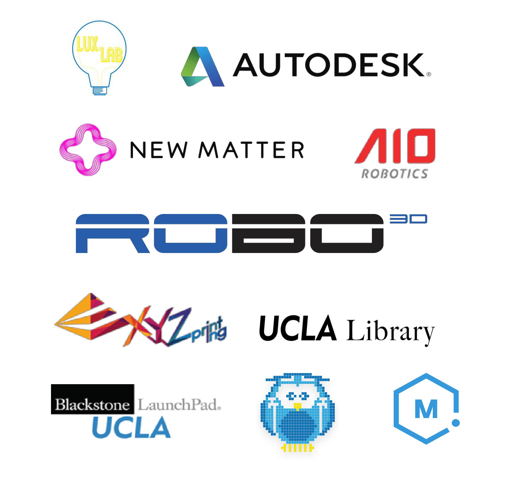

Meet the people who help keep our club running!


Amanda Han - Vice President
Amanda is a first-year Computer Science and Engineering major. She joined 3D4E because she loves tinkering with 3D printers and 3D modeling. She is also a volunteer at the Boelter Hall Innovation Lab (Makerspace). Aside from 3D printing, Amanda loves Dungeons and Dragons, painting, and computer graphics.

Anna Li - Secretary
Anna is a second year MIMG major who enjoys drawing and writing in her freetime. While she doesn't have too much experience with 3D printing, she picked up Fusion360 as a means to CAD a kpop lightstick for her friend's birthday and fell in love with 3D modeling somewhere along the way. Anna enjoys the process of bringing her creations to life and is currently taking requests for presents, fun projects, and black magic seances.

Ken Li - Treasurer
Ken is a 4th year mechanical engineering undergraduate student who joined 3D4E to pursue his interest in computer-aided design. He enjoys creating objects from mental images and the challenges of solving design issues. Outside of 3D4E, he also spends time tutoring kids in math and science. In his free time, he loves to watch movies, game online with his friends, and work on completing his coin collections.

Stefan Yue - Lab Manager
Stefan is a fifth year Bioengineering major. His interest is in biomechanics, orthopedics and bioprinting. He joined this club because 3D printing is extremely useful in the field of biomedical devices, for it’s capability in fast and cheap prototyping, his goal is to give people the ability to help themselves with 3D printed medical device. In his free time, he enjoys books, tea, and snowboarding.

Kyle C. Ho - Lab Manager
Kyle is a mechanical engineering freshman who strives to create contraptions that are completely pointless, but not entirely useless. Besides spending more time than he cares to admit designing these contraptions, Kyle also enjoys using 3D printing to create costumes and cosplay props with his sister; from Overwatch to the Marvel Cinematic Universe, Kyle will gladly shunt his studies to bring these characters to life. Not the best role model.

Tiffany Lee - Social Chair
Tiffany is a first year undergraduate computer science major. She discovered the world of 3D printing through 3D4E and is very excited to design more projects on Fusion 360. She is also involved with the Innovation Lab in Boelter as a volunteer. During her free time, she enjoys watching Chinese dramas and doing graphic designing. In the future, she wants to travel to different cities like Shanghai, Vancouver, and New York.

Mark Guevara - Technical Instructor
Mark is a second year Computer Science major. He began working with 3D printers in high school, and it quickly became one of his biggest hobbies. He enjoys constructing 3D printers and uses 3D printing for a number of small projects. He also spending time volunteering by teaching elementary school students about science and technology. In his free time, he enjoys playing with VR, folding origami, learning guitar.

Dennis Shen - Senior Advisor
Dennis is a fourth year mechanical engineering student that joined 3D4E to really dive into 3D printing with an emphasis on educating others about the field. He is also the 17-18 Resident Assistant for UCLA’s Design and Innovation community, working with groups such as FuturizeX and StartupUCLA to promote innovation and entrepreneurship on the Hill. In his free time, he drowns his ears in music and plays some club badminton.

Phipson Lee - Webmaster
Phipson is a fourth year undergraduate, pursuing a double major in Computer Science and Cognitive Science. He enjoys the expressive nature of 3D printing, and the creative freedom designers have as they engineer innovative solutions on their computers. He currently does research in Augmented Reality and Virtual Reality, and exploring ways both systems can be combined for CAD in general. In his free time, he loves playing the saxophone and working out at the gym.
Thank you to all our sponsors!
